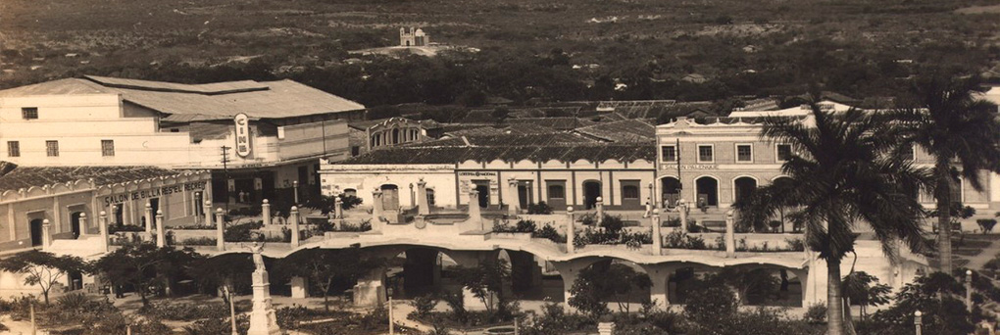
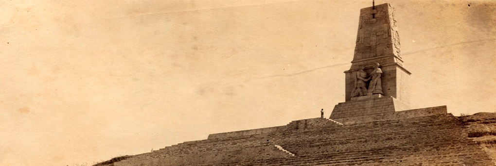
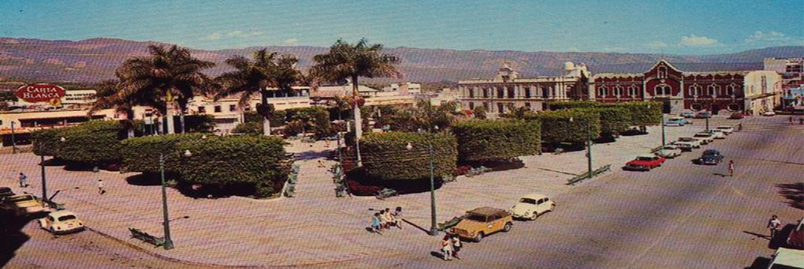
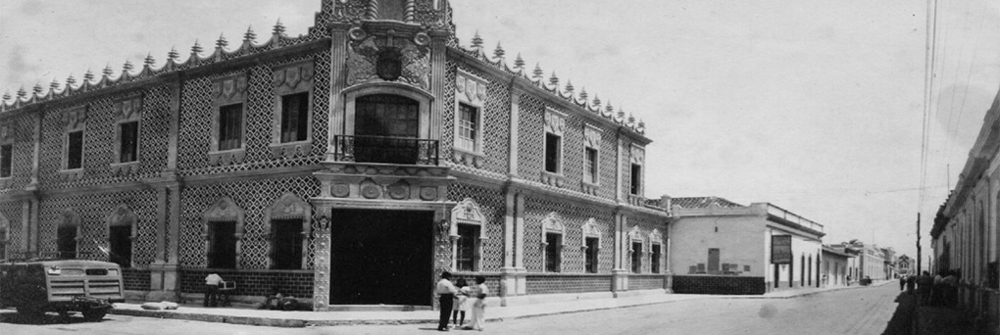
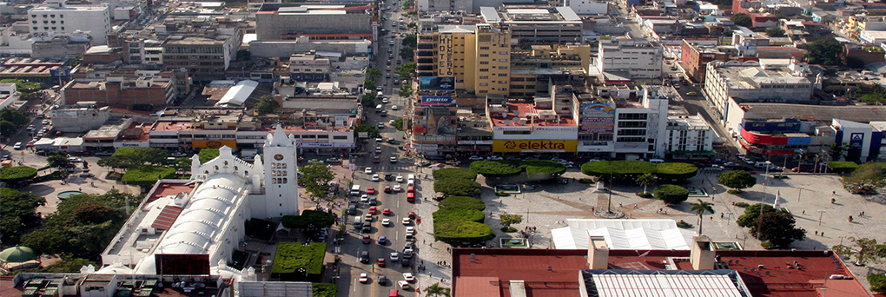

Anteriormente, el grupo étnico de los zoques habitaban gran parte de las regiones del estado de Chiapas y de otros estados. Arribaron al valle de Mactumaczá, extendiendo su territorio en los estados de Oaxaca, Tabasco y Campeche. Fueron ellos quienes llamaron Coyactoc a la actual ciudad de Tuxtla Gutiérrez.
Coyatoc, deriva del dialecto zoque los vocablos coya que significa "conejo" y toc que significa "casa". Posteriomente, se ha afirmado que el nombre del pueblo cambió a Coyatocmó, que significa "lugar casa de conejos". La ciudad de Tuxtla Gutiérrez ha sido llamado de varias formas por los diferentes grupos étnicos que la han visitado. Sin embargo, los aztecas al llegar a territorio chiapaneco, tradujeron la palabra Coyatocmó al náhuatl y el pueblo recibió el nombre de Tuchtlán que significa "tierra de conejos".
En el siglo VI a. C. los zoques establecieron una aldea en las faldas del cerro Mactumatzá y la comarca donde se hallaba le llamaron Coyatocmó. En los años 400 a. C., establecieron sus primeros centros ceremoniales. En los años 1486 y 1505, los mexicas invadieron la región y destruyeron la localidad. Bajo el dominio mexica la comarca fue llamada Tochtlán (Tierra donde abundan los conejos en náhuatl) por aquellos conquistadores.Los dominados zoques eran leales a los mexicas y además puntuales en el pago de tributos, les premiaron otorgándoles un escudo.
En 1560, unos frailes dominicos, encabezados por fray Antonio de Pamplona, fundaron formalmente dentro de esta comarca, el pueblo de San Marcos Evangelista Tuchtla en la margen derecha del río El Sabinal, el pueblo perteneció desde ese momento al convento de Tecpatlán y al priorato de Chiapa de Los Indios. Durante la época colonial, sólo era un poblado de descanso antes de arribar a la Chiapa de los indios (actualmente Chiapa de Corzo). Sin embargo, tenía importancia económica y geográfica por ubicarse en la ruta que unía a la provincia de Chiapas con las de Oaxaca, Tabasco, Campeche y Guatemala. En el siglo XVII, los frailes jesuitas impulsaron el crecimiento de Tuxtla y mandaron a crear un Templo mayor. Los dominicos mandaron crear el templo de Santo Domingo, San Roque y San Jacinto.
El 29 de octubre de 1813, a petición del canónigo Mariano Robles Domínguez ante las Cortes de Cádiz, el rey Fernando VII le otorga Tuxtla, Tapachula, Tonalá y Palenque la categoría de villa, como respuesta a sus buenos servicios y donativos a España. El 1 de enero de 1821 se instaló el primer ayuntamiento constitucional en San Marcos Tuxtla de dos alcaldes, dos síndicos y ocho regidores. Ese mismo año y tiempo después, el señor Salvador Peralta regresaba de la Ciudad de México, informado sobre la Independencia de México y reunió a los tuxtlecos en la plaza principal para exigir al ayuntamiento la proclamación de la independencia, que se logró el 4 de septiembre. Los tuxtlecos se opusieron a la anexión de Chiapas a México, pero el 7 de octubre de 1824 reconocieron tal anexión. El 27 de julio de 1829 por acuerdo del Congreso chiapaneco el Gobernador interino Emeterio Pineda otorgó oficialmente a Tuxtla la categoría de ciudad.